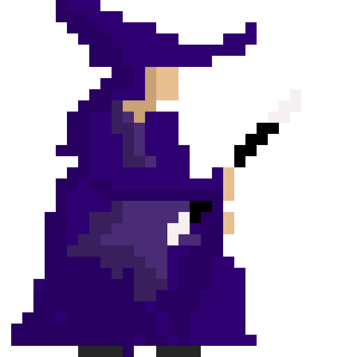

Winter hadn't come yet; the forest seemed to be trapped in an eternal loop of summers. All the trees and creatures of the forest were in distress. A large red dragon, along with its minions, had taken over the castle that sat atop the hill skirting the woods.
One of the minions had stolen the winter clothes of all the animals in a single night, and another kept stealing the ice whenever it formed on the lake at the heart of the forest. The dragon also spewed fumes every now and then, and had begun taking small forest animals as its feast.
Irritated and frightened by all this, the creatures of the forest sent an embassy to the Wizardess, who promised to take prompt action.
The Wizardess couldn't stand the plight of the animals and trees. Determined to help, she decided to investigate the matter herself. Armed with her trusty hat, her royal violet cloak, and the old wand, she set out for the hill.
During her journey she was heartbroken by what the forest had become — a land of heat and rot. Her favourite squirrels were crying in distress; the dragon had taken one of their family members as food. She comforted them and promised to do something about it.
Determined, she began climbing the mountain. She could have flown, of course — but she wanted to conserve her energy for whatever awaited her ahead. After a difficult and increasingly warmer climb, she reached the top, and there she saw...
A big red dragon sat behind the castle, its glistening eyes scanning the forest below. Its scaly skin shimmered with heat, and its ominous wings stretched wide as it roared and spewed thick fumes into the air. The Wizardess ducked behind a rock, carefully observing the creature. It was clearly keeping watch over the entire forest, a sentinel of chaos.
She planned to distract it and cast a freeze spell — a bold strategy, but perhaps the only one that could weaken the beast. Yet just as the idea fully formed in her mind, a sudden wave of piercing cold washed over her.
And then — boom — everything went dark.
When she awoke, she found herself in the topmost chamber of the castle.
Out of thin air, a strange glass-like creature appeared — its shimmering body packed with chunks of ice,
and a lemon sticking absurdly out of its brim.
The Wizardess narrowed her eyes. “This must be the minion who has been stealing the lake’s ice,” she thought.
As if reading her mind, the creature began to speak:
“I am the Mojito Monster. I, along with my partner Mirah, under my master Dread the Dragon,
have come to destroy the forest and its dwellers. You can do nothing to me — for my master has crafted me from moonlit glass,
and I am invincible!”
The Wizardess was a person of few words.
The moment she heard the phrase moonlit glass, she remembered her studies.
Without hesitation, she shouted, “Crankler!”
At once, her wand transformed into a gleaming hammer.
Only three strikes of this enchanted hammer could shatter moonlit glass — but the Mojito Monster was swift, darting across the chamber at lightning speed.
With the final strike of the enchanted hammer, the Mojito Monster shattered into glittering fragments of moonlit glass. The chamber filled with a brief, icy shimmer before falling silent once more.
Wasting no time, the Wizardess pushed through the creaking door and descended swiftly into the lower levels of the castle… for she knew this was only the beginning, and far greater dangers lurked below.